01 元宝 AI · 春节拉新
把产品能力放进真实过年场景
从三项春节玩法承担的不同作用出发，设计达人类型与产品植入表达，让产品自然融入场景。
分红包激励玩法
主会场
在同亲戚吹牛中传递十亿红包信息
社交玩法
元宝派
情侣异地过年互动
低门槛任务
创作模板
宠物写真与同款模板梗图融入生活剧情，展现多模态能力
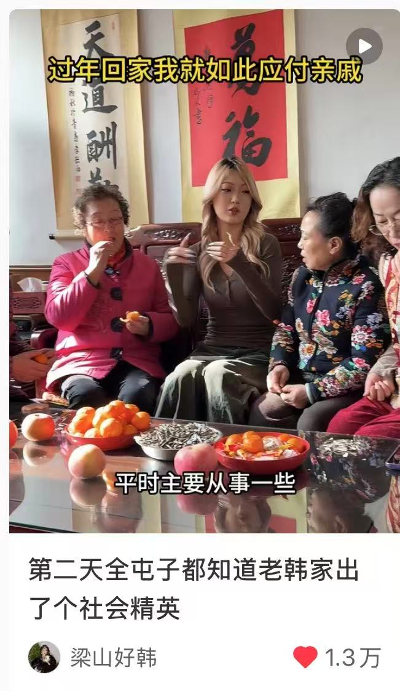
主会场
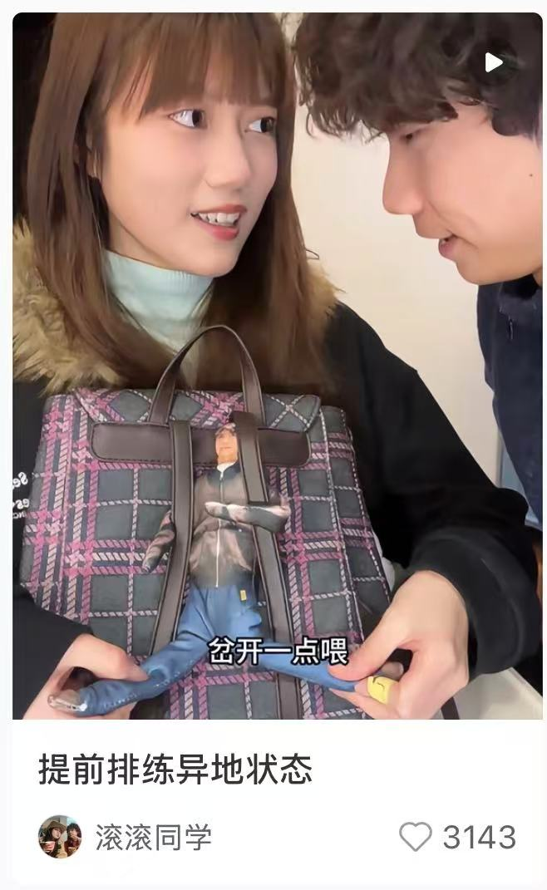
元宝派
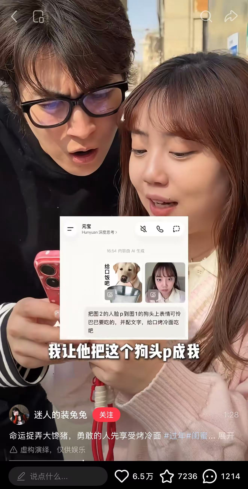
创作模板*梗图
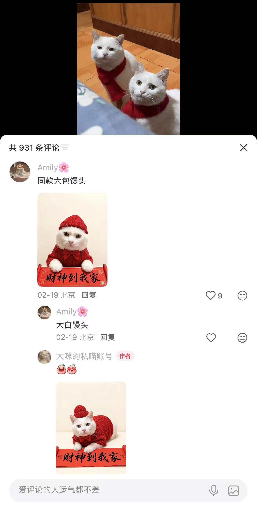
创作模板*评论区分享同款
02 元宝 AI · 日常拉新
探索小红书高转化高留存场景
优质选题方向
AI 录音笔 × 个人成长方向
以个人成长*元宝AI录音笔方向为例，从“记录自己”“表达力练习”等热点话题切入，选题模板产出多篇站内万赞笔记。
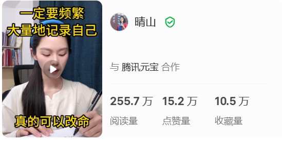
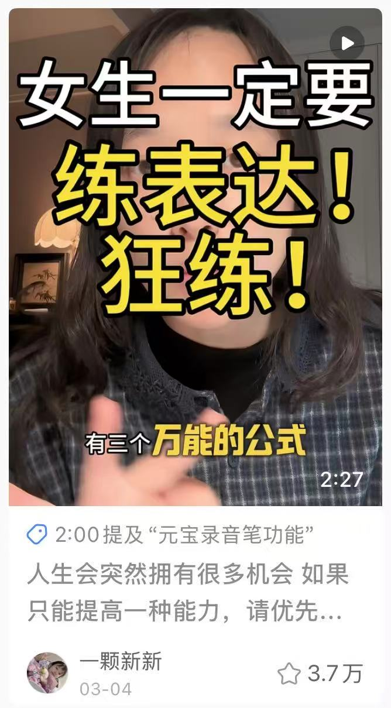
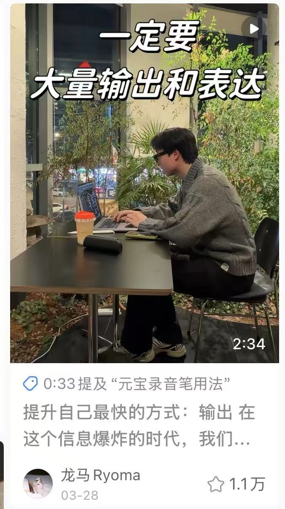
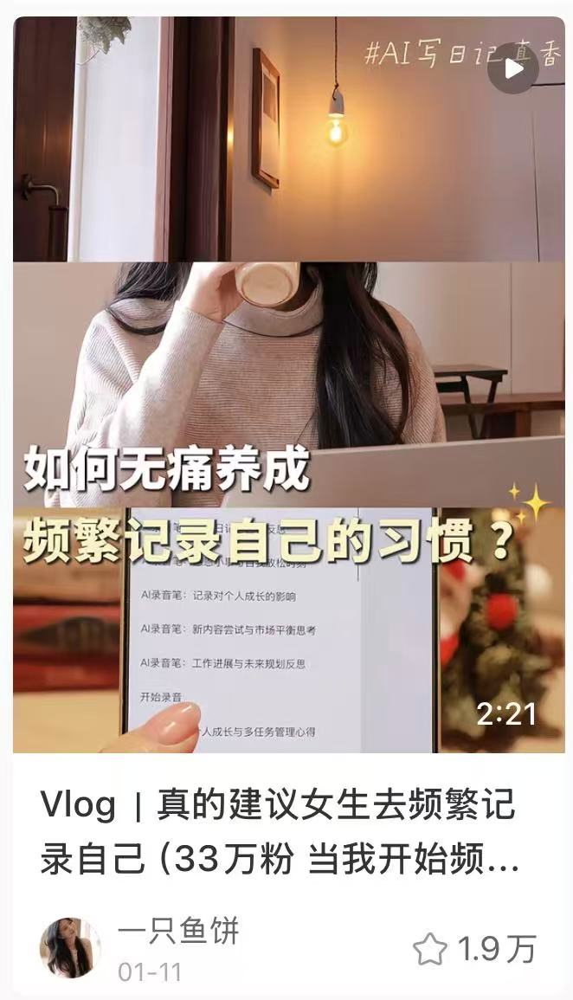
03 灵光 AI · 饭圈种草
UGC内容创作 总结经验为细分方向模板
将AI追踪功能深度融入零基础账号社媒内容，一期合作创作19篇社媒内容，千赞率16%，并在创作者社群分享“饭圈反黑”方向模板。
100万+自然阅读总量
3篇内容互动破百
8篇内容互动破百
04 飞亚达 · 明星话题营销
用主题词聚拢关注，让讨论持续发酵
主题词冲上抖音文娱热搜榜TOP10：#娱乐圈品牌最长情代言人；发酵话题 #飞亚达是高圆圆大粉吧、#高圆圆专属于她的告白词 等植入品牌内容。
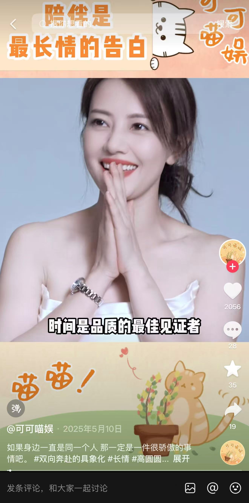
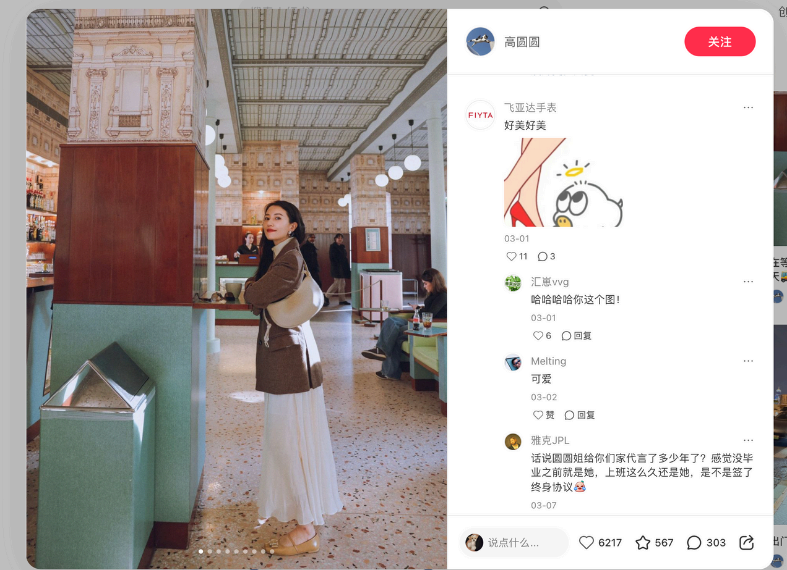
END OF CONTENT · 03
AI IN LIFE
聚焦 K-pop 舞蹈爱好者难以开始、容易遗忘、缺少成就感的练习困扰，借助 AI 开发兴趣工具Demo，探索更有反馈感的舞蹈学习体验。
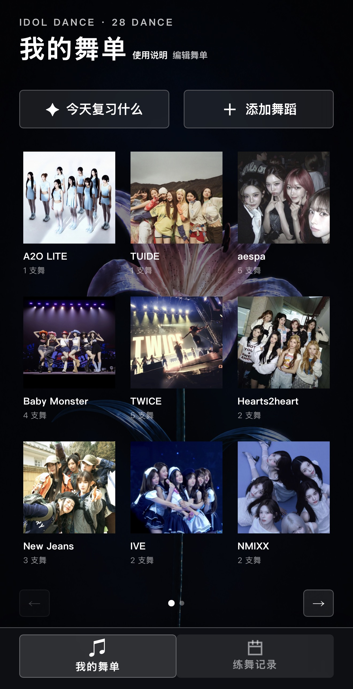
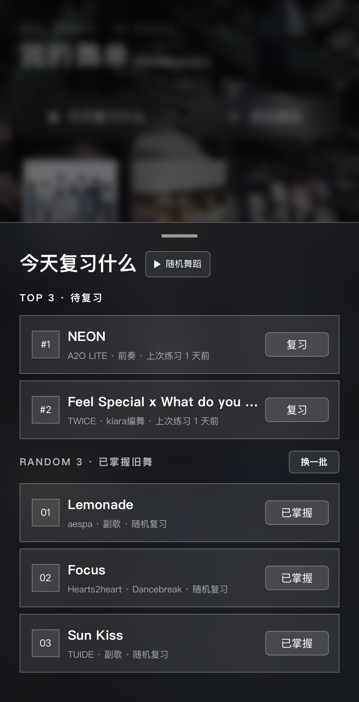
AI IN WORK / 01
AI Workflow in 快手
面对架构调整带来的服务行业数、品类数翻倍问题，将整理流程升级为Agent 驱动的AI Workflow，支持六大行业竞对分析、爆品洞察与行业洞察信息更新。
BEFORE · 人工串联人工取数 → AI文本分析 → 手动整理
AFTER · 流程协同Agent取数 → 规范输出结构 → 人工复查
AI IN WORK / 02
Analysis Skill in 快手
将取数、分层分析与报告生成沉淀为Skill。
从大盘表现深入不同体量客户，监控客户参与主动性与实际效果，定位异常并反馈销售。
整体监控→分层诊断→异常识别→反馈业务
三九胃泰养胃舒《知冷知暖才知己》
2025 第17届全国大学生广告艺术大赛 · 策划案国家级三等奖
OBSERVATION胃对食物的冷暖十分敏感，而我们却常常忽略它发出的信号。
INSIGHT忙着体察社会冷暖的年轻人，却容易在高压生活中忽略自己的身体需求。
BIG IDEA懂得人情冷暖，也别忘了照顾自己的冷暖。
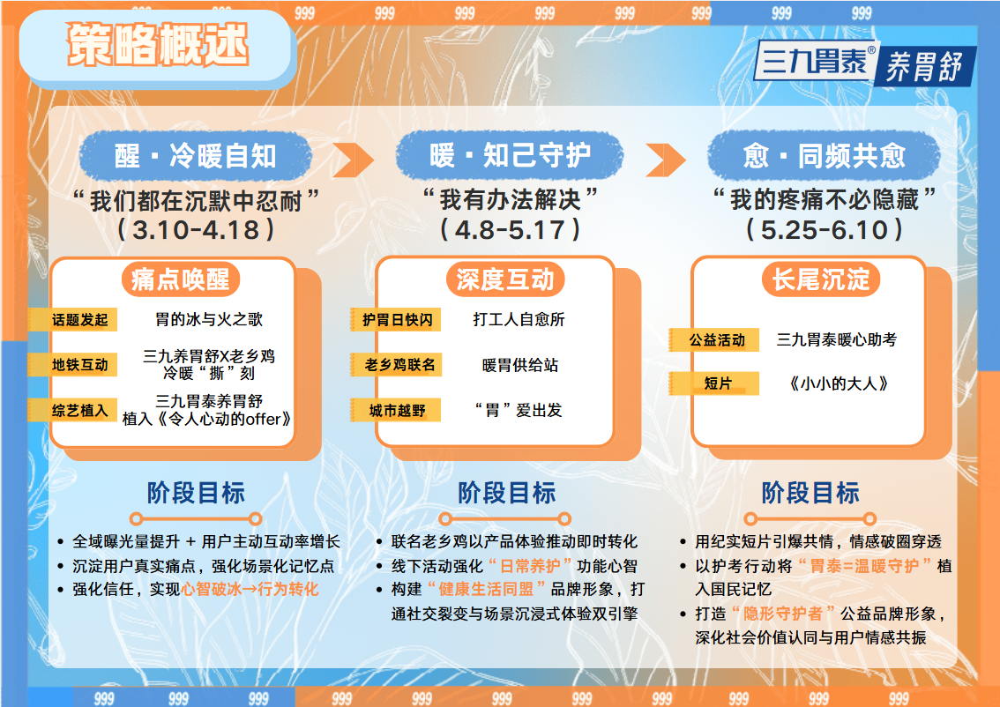
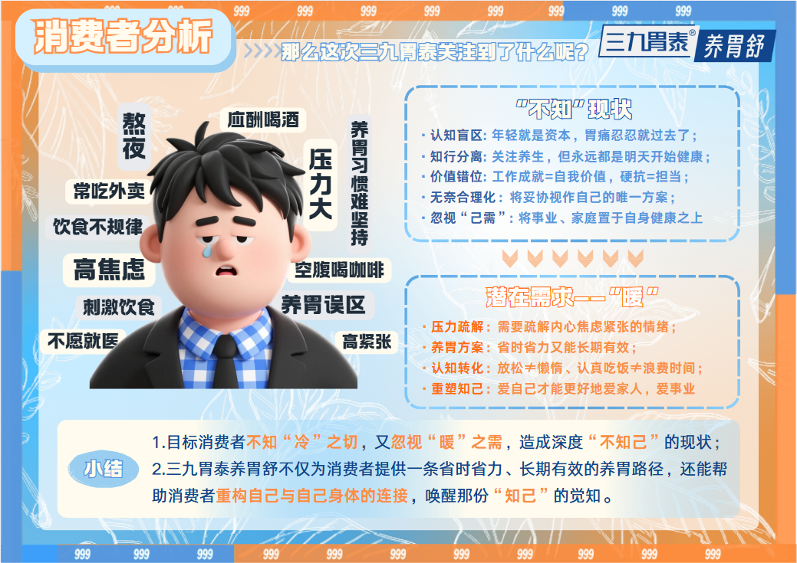
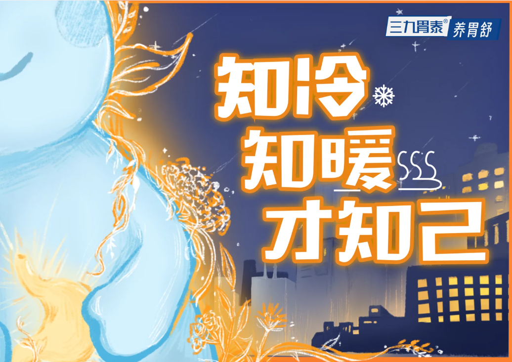
果乐果香《快乐果然简单》
2025 粤港澳大广节 · 品牌传播策划案
OBSERVATION长大后的快乐似乎难以简单获取，常常被日常琐事与精神内耗层层消耗。
INSIGHT对Z世代而言，童年的快乐记忆也许正是重新拾起简单快乐的入口。
BIG IDEA以熟悉的童年味道唤醒简单快乐，用减糖升级与新口味回应当下的消费需求。
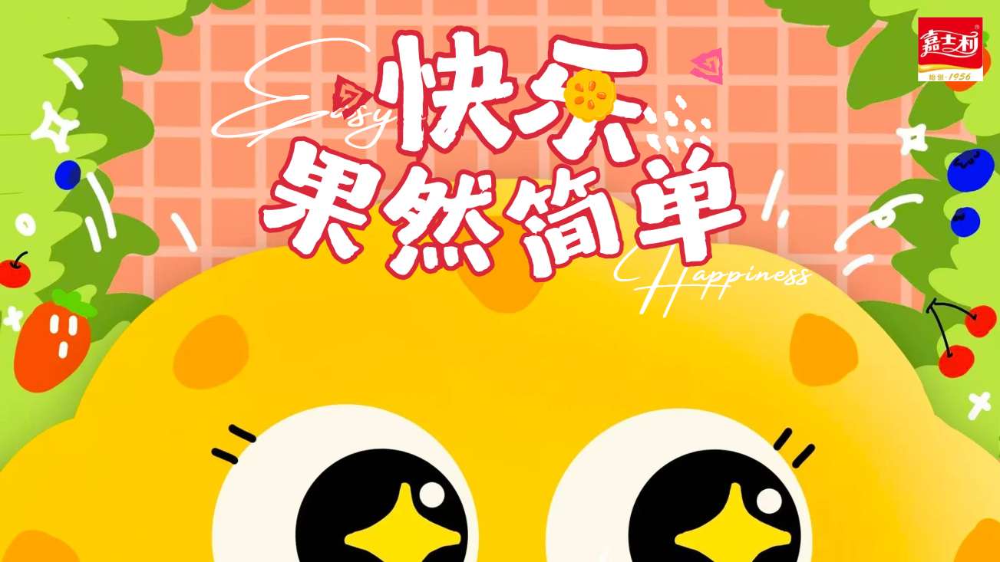
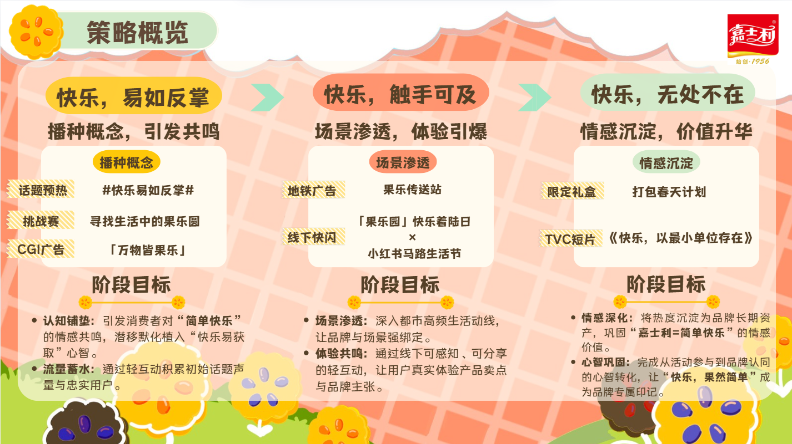
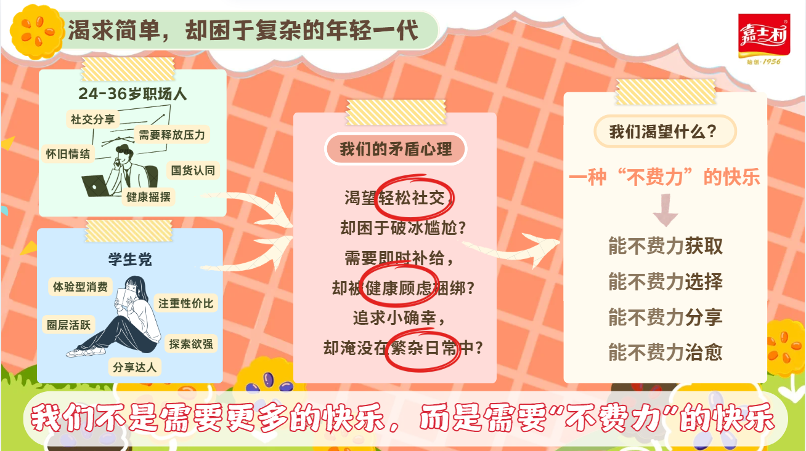